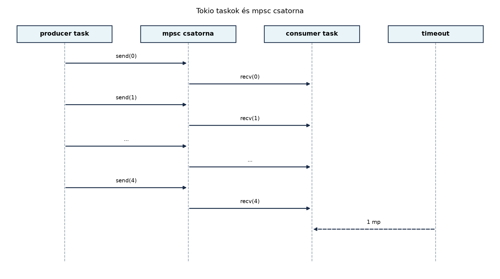

A C++-fejlesztő a párhuzamosságot leggyakrabban
std::thread, std::async és
std::future segítségével kezeli. A szálak azonban drágák:
minden szálhoz saját verem, kernel-ütemezés és gyakran rengeteg
szinkronizáció tartozik. Ha több ezer egyidejű kérést kell kiszolgálni,
a szálankénti blokkolás hamar skálázódási problémát okoz. A
std::async elindít egy feladatot, de nem tudja garantálni,
hogy az külön szálon, szálkészletben vagy éppen a hívó szálon fut-e; a
std::future pedig blokkoló .get()-et ad, nem
pedig valódi aszinkron kompozíciót. Az aszinkron I/O-hoz a C++-ban
könyvtárakra (Boost.Asio, libuv) vagy platformfüggő
epoll/io_uring kódra van szükség.
A Rust az aszinkronitást nyelvi szinten a
async/await párossal kezeli, de a
végrehajtáshoz szükség van egy runtime-ra. A tokio a
legelterjedtebb ilyen runtime, amely taskokra, aszinkron I/O-ra,
csatornákra és időzítőkre épít. Ez az alfejezet a tokio alapjait adja:
taskok indítását, csatornákat, select!-et, időkorlátokat és
a megszakítás-biztonságot. Ezt az alapot közvetlenül felhasználjuk az rkv hálózati szerverben, ahol a TCP-protokollt és a
kecses leállást valósítjuk meg, valamint a naplózás
és megfigyelhetőség alfejezetben is.
#[tokio::main]Definíció. A runtime (futtatókörnyezet) az a komponens, amely az aszinkron feladatokat (future-öket) ütemezi és futtatja. A task egy olyan, a runtime által ütemezett future, amely önállóan futhat a többi taskkal párhuzamosan. A JoinHandle egy olyan fogantyú, amely a task befejeződését várja, és opcionálisan annak eredményét adja vissza.
A tokio runtime-ot legegyszerűbben a #[tokio::main]
attribútummal indíthatjuk el:
#[tokio::main]
async fn main() {
println!("Hello, async!");
}Ez az attribútum lényegében a következőre fordul:
fn main() {
tokio::runtime::Runtime::new()
.expect("hiba a runtime indításakor")
.block_on(async {
println!("Hello, async!");
});
}A #[tokio::main] alapértelmezetten
multi-threaded runtime-ot hoz létre, amely egy
szálkészleten futtatja a taskokat. Minden taskot a
tokio::spawn függvénnyel indíthatunk:
let handle = tokio::spawn(async {
// Task törzse
});A tokio::spawn megköveteli, hogy a taskban lévő future
Send + 'static legyen. A 'static megkötés
miatt a task nem tarthat referenciát például a hívó veremére; a
megosztott állapotot Arc-cal vagy csatornákkal kell átadni.
A Send megkötés garantálja, hogy a task biztonságosan
átkerülhet egy másik szálra. Ha egy adat nem Send, akkor a
task nem futtatható a tokio multi-threaded runtime-ján.
A JoinHandle-t await-elve megvárhatjuk a
task befejezését:
let handle = tokio::spawn(async { 42 });
let result = handle.await.unwrap(); // 42Itt az unwrap a task JoinError-ját kezeli,
amely akkor keletkezik, ha a task pánikba fulladt vagy megszakadt. A
Rust std::thread::JoinHandle analógiájára a tokio
JoinHandle is a task „csatlakoztatására” szolgál, de nem
blokkol, hanem egy future-t ad vissza.
A C++ std::async és a tokio spawn
alapvetően más modellt követ.
// C++: std::async feladat
#include <future>
#include <iostream>
int main() {
auto fut = std::async(std::launch::async, [] {
return 42;
});
std::cout << fut.get() << '\n';
}// Rust: tokio::spawn task
#[tokio::main]
async fn main() {
let handle = tokio::spawn(async {
42
});
let result = handle.await.expect("a task pánikba fulladt");
println!("{result}");
}A különbség: a C++ std::async a hívó szálat blokkolja a
get() hívásakor, és a feladatot a rendszer szálkészletén
futtatja. A tokio spawn egy future-t ad vissza, amelyet
await-elni kell, és a runtime saját ütemezője kezeli a
feladatot; a taskok száma nem feltétlenül egyezik a szálak számával,
mert a tokio work-stealing módon osztja el a taskokat a
szálkészleten.
A std::promise/std::future páros egyértelmű
Rust-megfelelője a oneshot csatorna, amelyet lentebb
tárgyalunk.
Szabály. Az aszinkron taskban tilos blokkoló hívást
(például std::thread::sleep, std::fs::read,
std::net::TcpStream::read) közvetlenül hívni, mert az
blokkolja az egész runtime-szálat, és megakadályozza a többi task
ütemezését. Ilyen hívást csak
tokio::task::spawn_blocking-ben szabad alkalmazni;
aszinkron I/O-ra a tokio::fs, tokio::net és
azok async metódusait kell használni.
Példa a helyes I/O-ra:
use tokio::fs;
async fn read_config() -> std::io::Result<String> {
fs::read_to_string("/etc/rkv/config.toml").await
}Ha CPU-köteles vagy blokkoló szinkron I/O-műveletet kell végezni,
használjunk spawn_blocking-et:
let result = tokio::task::spawn_blocking(|| {
// Blokkoló művelet, pl. std::fs::read
std::fs::read_to_string("/etc/rkv/config.toml")
})
.await
.expect("a blocking task pánikba fulladt")?;A spawn_blocking egy külön szálkészleten futtatja a
lezárt closure-t, így nem akadályozza az async feladatokat.
A tokio a következő async csatornákat nyújtja:
mpsc (multi-producer,
single-consumer): több küldő, egy fogadó. Ez a leggyakoribb
munkamegosztási eszköz.oneshot: egyetlen érték egyszeri
küldése. A C++ std::promise–std::future pár
megfelelője.broadcast: több fogadó, mindenki
ugyanazt az üzenetet kapja meg.Példa mpsc csatornára:
use tokio::sync::mpsc;
let (tx, mut rx) = mpsc::channel::<i32>(8);
tx.send(10).await?;
let value = rx.recv().await.unwrap();A csatornák alapértelmezetten bounded (korlátos)
csatornák, ami a C++ std::vector/std::queue
alapú saját implementációkhoz képest beépített
backpressure-t ad: ha a puffer megtelik, a
send future addig vár, amíg a fogadó fel nem szabadít
helyet. Az unbounded_channel korlátlan puffert ad, de ezt
ritkán érdemes használni, mert a termelő túlcsordulhat.
A oneshot csatorna a std::promise közvetlen
Rust-megfelelője:
use tokio::sync::oneshot;
let (tx, rx) = oneshot::channel::<String>();
tx.send(String::from("hello")).unwrap();
let value = rx.await.unwrap();A broadcast csatorna egyszerre több fogadónak juttatja
el az üzenetet:
use tokio::sync::broadcast;
let (tx, _rx) = broadcast::channel::<i32>(16);
let mut rx1 = tx.subscribe();
let mut rx2 = tx.subscribe();
tx.send(1).unwrap();
assert_eq!(rx1.recv().await.unwrap(), 1);
assert_eq!(rx2.recv().await.unwrap(), 1);select! és
timeoutA tokio::select! makró lehetővé teszi, hogy több
future-t versenyeztessünk: az elsőként befejeződő ág kiválasztódik, a
többi future automatikusan dropolódik (megszakad). Ez a C++
select/poll rendszerhívások async megfelelője,
de a C++-ban erre a nyelv szintjén nincs beépített megoldás.
A timeout függvény egy future-t és egy időkorlátot
kapcsol össze:
use tokio::time::{timeout, Duration};
async fn slow_work() -> String {
tokio::time::sleep(Duration::from_secs(5)).await;
String::from("kész")
}
#[tokio::main]
async fn main() {
let result = timeout(Duration::from_millis(100), slow_work()).await;
match result {
Ok(value) => println!("Időben kész: {value}"),
Err(_) => println!("Időkorlát lejárt."),
}
}A timeout tulajdonképpen egy select!-re
bontható:
tokio::select! {
value = slow_work() => {
println!("Időben kész: {value}");
}
_ = tokio::time::sleep(Duration::from_millis(100)) => {
println!("Időkorlát lejárt.");
}
}Ez a példa egyben bemutatja a select! szintaxisát is. A
select! képes a Future trait poll
mechanizmusára építve hatékonyan várni több future-re anélkül, hogy
szálanként blokkolnánk.
A select!-ben az egyes ágak teljes kifejezések, és
minden ágban egy jövőbeli (future) kifejezés szerepel, amelynek
eredményét mintázni lehet. A kiválasztott ág lefut, a többi ág future-je
megszakad (dropolódik).
Definíció. Egy future megszakításbiztos (cancellation-safe), ha a megszakítása (dropolása) után a rendszer állapota olyan, mintha a future soha nem is futott volna. Ha egy future részlegesen hajt végre egy műveletet, és a megszakítás után a rendszer állapota nem konzisztens, akkor a future nem megszakításbiztos.
A select!-ben a nem kiválasztott ágak azonnal
megszakadnak. Ez különösen veszélyes akkor, ha az ág egy összetett
műveletet végez: például először egy csatornára küld, majd egy másikat
hajt végre. Ha a select! a második lépés közben szakítja
meg a future-t, az első lépés már végrehajtódott, a második nem, így a
rendszer állapota részleges.
Példa: helytelen használat
// Ez a minta nem biztonságos: ha a timeout lejár, az első send már megtörténhetett.
tokio::select! {
_ = async {
tx1.send(value).await;
tx2.send(other).await;
} => { /* ... */ }
_ = sleep(Duration::from_secs(1)) => { /* timeout */ }
}Itt ha a sleep nyer, a tx1-re küldés
megtörténhetett, a tx2-re nem, ami inkonzisztens állapotot
eredményez. A megoldás az, hogy a select! ágai
atomikus és idempotens műveleteket
tartalmazzanak, vagy egy dedikált state machine-t használunk, amely
nyomon követi, hol tartottunk. Az olyan egyszerű műveletek, mint az
mpsc::Sender::send, a oneshot::Sender::send, a
TcpStream::read és az mpsc::Receiver::recv
általában biztonságosak. A nem biztonságos esetek közé tartozik a
tokio::fs::File::write_all idő előtti megszakítása, mert a
fájl részben íródhat; valamint minden olyan kód, amely több, egymástól
függő mellékhatást végez.
A megszakítás-biztonság a drop-alapú cancellation következménye. A Rust async modellben nincs explicit cancellation API; a future elhagyása (drop) szakítja meg a műveletet. Ez az egyszerű és hatékony stratégia, de fegyelmet igényel a fejlesztőtől.
Munkakönyvtár: ~/rust-labor/r039/
Ebben a laborban létrehozunk egy önálló kísérleti programot, amely
bemutatja a taskokat, az mpsc csatornát, a
select!-et és a timeoutot. Az itteni
ismereteket a későbbi rkv-server laborban a szerver
TCP-protokollja hasznosítja.
Hozzuk létre a projektet és adjuk hozzá a tokio függőséget:
mkdir -p ~/rust-labor && cd ~/rust-labor && cargo new r039
cd r039A Cargo.toml tartalma:
[package]
name = "r039"
version = "0.1.0"
edition = "2024"
[dependencies]
tokio = { version = "1", features = ["full"] }Írjuk a src/main.rs-t:
use tokio::sync::mpsc;
use tokio::time::{sleep, Duration};
#[tokio::main]
async fn main() {
// Bounded mpsc csatorna: kapacitás 8, típus i32.
let (tx, mut rx) = mpsc::channel::<i32>(8);
// Producer task: 5 értéket küld 50 ms-onként.
let producer = tokio::spawn(async move {
for i in 0..5 {
if tx.send(i).await.is_err() {
// A fogadó már leállt; nincs több küldés.
break;
}
sleep(Duration::from_millis(50)).await;
}
println!("Producer: befejeztem.");
});
// Consumer task: fogadja az értékeket, de 1 mp után leáll.
let consumer = tokio::spawn(async move {
loop {
tokio::select! {
Some(n) = rx.recv() => {
println!("Consumer: fogadva: {n}");
}
_ = sleep(Duration::from_secs(1)) => {
println!("Consumer: időkorlát lejárt, leállás.");
break;
}
}
}
});
let _ = producer.await;
let _ = consumer.await;
}Futtassuk a programot:
cargo runVárt kimenet (az időzítés miatt a sorrend és az utolsó üzenet gépfüggő lehet, ez az adat illusztratív):
Consumer: fogadva: 0
Consumer: fogadva: 1
Consumer: fogadva: 2
Consumer: fogadva: 3
Consumer: fogadva: 4
Producer: befejeztem.
Consumer: időkorlát lejárt, leállás.A producer 5 értéket küld összesen 250 ms alatt, a consumer 1
másodpercig vár, így mind az 5 értéket fogadja, majd a
select!-ben a sleep ág nyer, mert nincs több
üzenet, és a consumer leáll.
A következő ábra a taskok és a csatorna közötti üzenetváltást mutatja:

A producer task aszinkron módon küldi az értékeket, a consumer task
aszinkron módon fogadja őket. A timeout egy belső időzítő, amely a
consumer select!-ében versenyez a recv-vel. Ha
az 1 másodperc letelik, a timeout ág nyer, a recv future
megszakad, és a consumer kilép a ciklusból.
Blokkoló hívás async taskban. Ha például
std::thread::sleep-et vagy std::fs::read-et
hívunk async fn-ben, az blokkolja a tokio runtime-szálát,
és a többi task nem futhat. A szabály egyszerű: async kódban kizárólag
async függvényeket és .await-elt future-öket használjunk;
blokkoló kódhoz spawn_blocking való.
A select!-ben több mellékhatás. A
megszakítás-biztonság hiánya gyakori hiba. Ha egy
select!-ágban két egymást követő send hívás
van, a timeout megszakíthatja a műveletet az első send után, ami
részleges állapotot hagy. A megoldás: az ágak atomikus műveleteket
tartalmazzanak, vagy a state machine mintát kövessük.
Rc és nem-Send adatok a
taskban. A tokio::spawn
Send + 'static future-t igényel. Ha egy taskban
Rc-t vagy olyan referenciát használunk, amely nem
'static, fordítási hibát kapunk. Ilyenkor
Arc-ra kell váltani, vagy a data ownership-et csatornán
átadni. Ez a Rust szigorúságának egyik előnye: a hibát már fordítás
előtt elkapjuk.
Az await elfelejtése a
JoinHandle-n. Ha a JoinHandle-t nem
await-eljük, a task akkor is lefut, de a főprogram
kiléphet, mielőtt a task befejeződne. A tokio runtime a kilépéskor
leállítja a taskokat. A JoinHandle await-elése
biztosítja a kecses leállást.
Miért követeli meg a tokio::spawn, hogy a future
Send + 'static legyen? Miért nem elég a
'static, és miért okoz problémát, ha a future nem
Send a multi-threaded runtime-ban?
Írd át a következő C++ kódot idiomatikus Rust async kódra tokio-val:
#include <future>
#include <iostream>
#include <chrono>
#include <thread>
int main() {
auto fut1 = std::async(std::launch::async, [] {
std::this_thread::sleep_for(std::chrono::milliseconds(500));
return 1;
});
auto fut2 = std::async(std::launch::async, [] {
std::this_thread::sleep_for(std::chrono::milliseconds(300));
return 2;
});
// Az elsőként befejeződő eredményét írjuk ki.
// (Egyszerűen megvárjuk mindkettőt, de a válaszban használj select!-et.)
std::cout << fut1.get() << ' ' << fut2.get() << '\n';
}Írj egy select_timeout nevű async generikus függvényt,
amely egy future-t és egy Duration időkorlátot kap, és
Result<F::Output, tokio::time::error::Elapsed> típust
ad vissza. A függvény belül tokio::select!-et használjon,
ne a tokio::time::timeout-ot. Hasonlítsd össze a
viselkedést a beépített timeout-tal.
Az alábbi select! kód nem megszakításbiztos. Magyarázd
el, mi a baj, és javítsd ki úgy, hogy az ágak atomikusak legyenek.
let (tx1, mut rx1) = mpsc::channel::<i32>(8);
let (tx2, _rx2) = mpsc::channel::<i32>(8);
tokio::select! {
_ = async {
tx1.send(42).await?;
tx2.send(24).await?;
} => { /* ... */ }
_ = sleep(Duration::from_secs(1)) => { /* timeout */ }
}A 'static megkötés azért szükséges, mert a task elvileg
tetszőleges ideig futhat, így minden benne lévő referenciának
érvényesnek kell lennie a task teljes élettartama alatt. A
'static nem azt jelenti, hogy az adat soha nem szabadul
fel, csak azt, hogy a hivatkozott adat nem függ a hívó veremétől. A
Send megkötés azért kell, mert a multi-threaded runtime a
taskot átmozgathatja egyik szálról a másikra; a Send
tulajdonság garantálja, hogy az adat biztonságosan átvihető szálak
között. Ha a future nem Send, akkor nem lehet a taskot
másik szálon futtatni, ami versenyhelyzetet okozhatna. A megoldás
ilyenkor a LocalSet használata (csak azon a szálon futó
taskok), de ez ritkábban szükséges.
use tokio::time::{sleep, Duration};
#[tokio::main]
async fn main() {
let fut1 = async {
sleep(Duration::from_millis(500)).await;
1
};
let fut2 = async {
sleep(Duration::from_millis(300)).await;
2
};
let result = tokio::select! {
n1 = fut1 => n1,
n2 = fut2 => n2,
};
println!("Elsőként: {result}");
}A select! az elsőként befejeződő eredményt adja vissza,
a másik future megszakad. Ha mindkettőt meg akarjuk várni, használhatunk
tokio::join!-ot is.
use std::future::Future;
use tokio::time::{sleep, Duration};
async fn select_timeout<F>(fut: F, dur: Duration) -> Result<F::Output, tokio::time::error::Elapsed>
where
F: Future,
{
tokio::select! {
output = fut => Ok(output),
_ = sleep(dur) => Err(tokio::time::error::Elapsed::new()),
}
}
#[tokio::main]
async fn main() {
let result = select_timeout(async { sleep(Duration::from_millis(100)).await; 42 }, Duration::from_secs(1)).await;
println!("{result:?}"); // Ok(42)
}A beépített timeout hasonló logikát valósít meg, de
részletesebb hibainformációt ad (például Elapsed típus),
míg a saját implementáció az Elapsed generikus
konstrukcióját használja. A
tokio::time::error::Elapsed::new() publikus konstruktor-e?
Ezt ellenőrizni kell: a megadott kódban feltételezzük, hogy van ilyen;
ha nincs, a timeout hívásból visszakapott Err
típust párosíthatjuk. A példa didaktikus; a pontos API-t a docs.rs-en
érdemes ellenőrizni. (Itt a válasz lefordíthatósága a tokio verziójától
függ, de a lényeg a select! használatán van.)
A probléma az, hogy a select!-ben az async
blokk két send hívást tartalmaz. Ha a timeout ág nyer az
első send után, a tx1-re elküldött érték már a csatornában
van, a tx2-re szánt érték viszont elveszett. Ez az állapot
inkonzisztens: a fogadó rx1 értéket kap, rx2
nem.
A javítás megközelítései:
Külön task ban végezzük a két send-et, és a
select!-ben csak a task JoinHandle-jét versenyeztetjük a
timeout-tal. Ha a timeout nyer, a task folytatódik, és az értékek
elküldése nem szakad meg. Ez azért biztonságos, mert a task megszakítása
a JoinHandle dropolásával nem azonnali; a task tovább
futhat, de a programnak ezt a lehetséges leállást tudnia kell
kezelni.
Használjunk egyetlen mpsc küldést,
amely atomikus a select!-ben; ha az érték átadása megszakad, az érték
elveszik, de a csatorna állapota konzisztens marad. A két különböző
csatornára küldés esetén szükség van egy state machine-re.
Az első megoldás kódja:
let (tx1, mut rx1) = mpsc::channel::<i32>(8);
let (tx2, _rx2) = mpsc::channel::<i32>(8);
let task = tokio::spawn(async move {
if tx1.send(42).await.is_ok() {
let _ = tx2.send(24).await;
}
});
tokio::select! {
_ = task => { /* a task befejeződött */ }
_ = sleep(Duration::from_secs(1)) => {
// A task itt megszakad? Nem: a JoinHandle dropolva van, de a task fut tovább.
// A példa kedvéért elfogadjuk, hogy a task lehet, hogy elküldi az értékeket.
println!("Időkorlát lejárt.");
}
}Ez a megoldás nem szünteti meg a megszakítási kérdést, de áthelyezi a
taskra: ha a timeout lejár, a JoinHandle elhagyása nem
garantálja a task leállítását. A tokio a taskok megszakítását explicit
abortálással (JoinHandle::abort) kezeli, de ez is csak a
következő .await pontnál lép érvénybe. A helyes tervezési
döntés az, hogy a kritikus állapotot csatornákon vagy idempotens
műveleteken keresztül kezeljük, és kerüljük a több lépéses, részlegesen
megszakítható műveleteket.
A tokio runtime feladata a future-ök ütemezése. A
#[tokio::main] multi-threaded runtime-ot indít, a
tokio::spawn Send + 'static future-öket futtat
taskokként, és JoinHandle-t ad vissza. Az async I/O-hoz a
tokio::fs és tokio::net modulok async
függvényeit kell használni, blokkoló kódhoz pedig a
spawn_blocking-et. A tokio csatornák (mpsc,
oneshot, broadcast) async kommunikációt
biztosítanak; a mpsc bounded csatornája backpressure-t ad.
A select! makró több future-t versenyeztet, a
timeout pedig időkorlátot ad egy future-höz. A
kiválasztatlan ágak future-jei megszakadnak, ezért a
select! ágaknak megszakításbiztosnak kell lenniük:
atomikus, idempotens műveleteket tartalmazzanak. Ezek az ismeretek
közvetlenül felhasználásra kerülnek az rkv hálózati
szerver TCP-protokolljában és a naplózás
alfejezetben.
A tokio pontos API-ját a docs.rs-en ellenőrizni kell: a
tokio::time::error::Elapsed konstruálhatósága, a
select! szintaxisa, a csatornák kapacitás-kezelése és a
spawn_blocking viselkedése. A #[tokio::main]
macro pontos bővítését a tokio dokumentációja írja le. A példák a tokio
1.x főverzióját feltételezik; a pontos alverziók a Cargo.lock-ban
rögzíthetők.